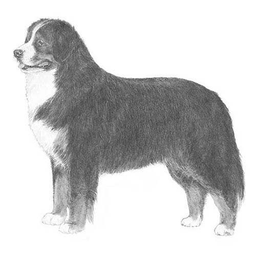

| Image |
Breed |
Description |
|
Alaskan Malamute |
An immensely strong, heavy-duty worker of spitz type, the Alaskan Malamute is an affectionate, loyal, and playful but dignified dog recognizable by his well-furred plumed tail carried over the back, erect ears, and substantial bone. The Alaskan Malamute stands 23 to 25 inches at the shoulder and weighs 75 to 85 pounds. Everything about Mals suggests their origin as an arctic sled dog: The heavy bone, deep chest, powerful shoulders, and dense, weatherproof coat all scream, 'I work hard for a living!' But their almond-shaped brown eyes have an affectionate sparkle, suggesting Mals enjoy snuggling with their humans when the workday is done. Mals are pack animals. And in your family 'pack,' the leader must be you. If a Mal doesn't respect you, he will wind up owning you instead of the other way around. Firm but loving training should begin in early puppyhood. That said, a well-behaved Mal is a joy to be with' playful, gentle, friendly, and great with kids.
https://www.akc.org/dog-breeds/alaskan-malamute/
|
|  |
Bernese Mountain |
Big, powerful, and built for hard work, the Bernese Mountain Dog is also strikingly beautiful and blessed with a sweet, affectionate nature. Berners are generally placid but are always up for a romp with the owner, whom they live to please. The Bernese Mountain Dog is a large, sturdy worker who can stand over 27 inches at the shoulder. The thick, silky, and moderately long coat is tricolored: jet black, clear white, and rust. The distinctive markings on the coat and face are breed hallmarks and, combined with the intelligent gleam in the dark eyes, add to the Berner's aura of majestic nobility. A hardy dog who thrives in cold weather, the Berner's brain and brawn helped him multitask on the farms and pastures of Switzerland. Berners get along with the entire family and are particularly gentle with children, but they will often become more attached to one lucky human. Berners are imposing but not threatening, and they maintain an aloof dignity with strangers.
https://www.akc.org/dog-breeds/bernese-mountain-dog/
|
|
|
Basenji |
The Basenji, Africa's 'Barkless Dog,' is a compact, sweet-faced hunter of intelligence and poise. They are unique and beguiling pets, best for owners who can meet their exercise needs and the challenge of training this catlike canine. Basenjis are small, graceful hounds standing 16 or 17 inches at the shoulder. They are recognizable by their glistening short coat, tightly curled tail, and wrinkled forehead and expressive almond-shaped eyes that convey a variety of subtle, humanlike emotions. Basenjis are a lovely sight at a standstill but more impressive yet at a fast trot, when they exhibit the long, smooth strides of a mini-racehorse. And yes, it's true, they don't bark, but they make their feelings known with an odd sound described as something between a chortle and a yodel. Basenjis are fastidious and will groom themselves like cats. This has been called a 'cult breed'small in numbers, but those lucky enough to own one do so with singular devotion.
https://www.akc.org/dog-breeds/alaskan-malamute/
|